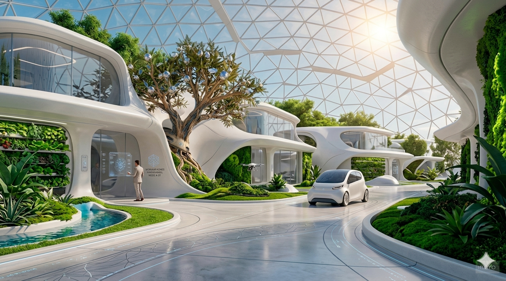
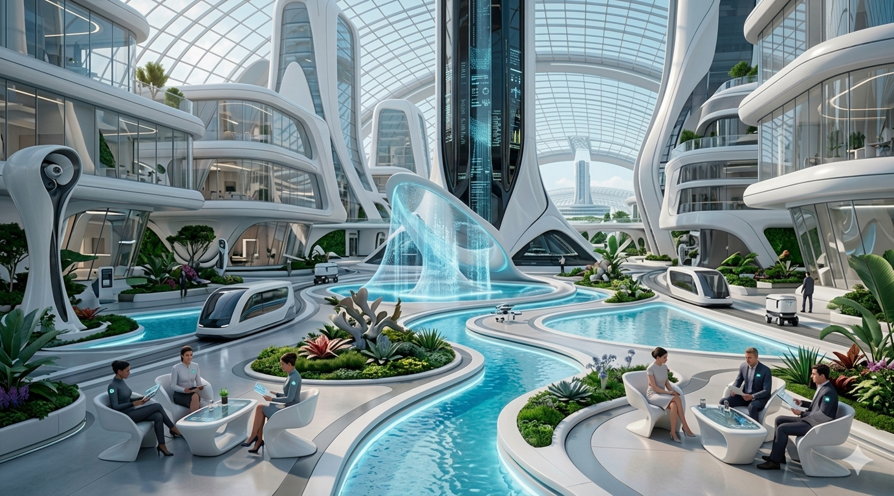
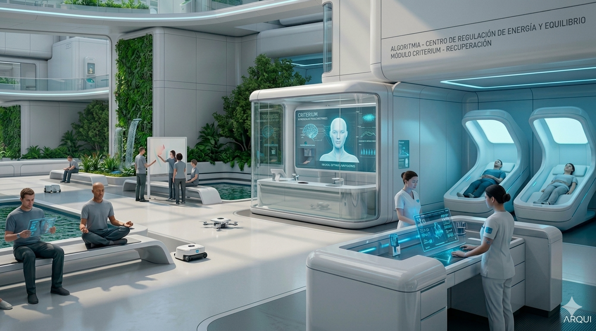
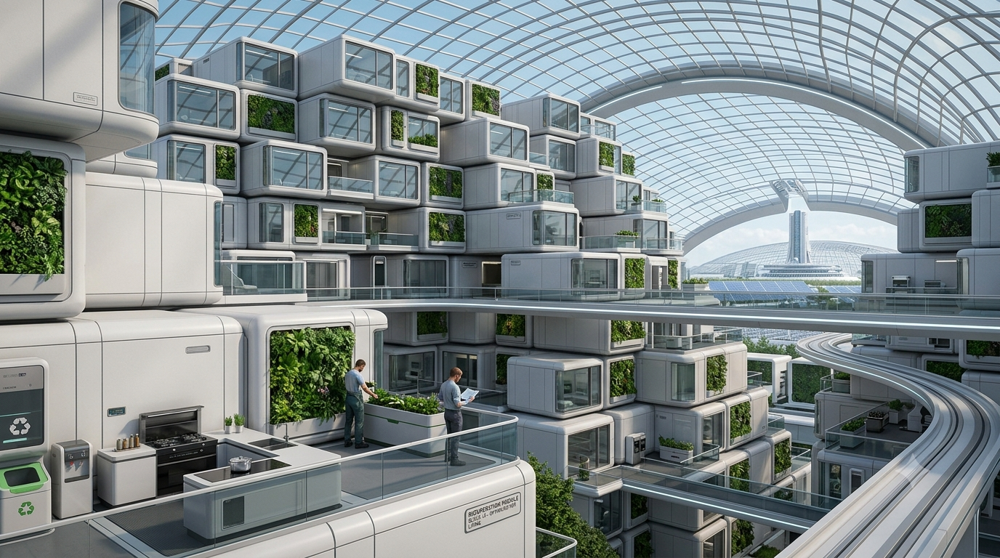
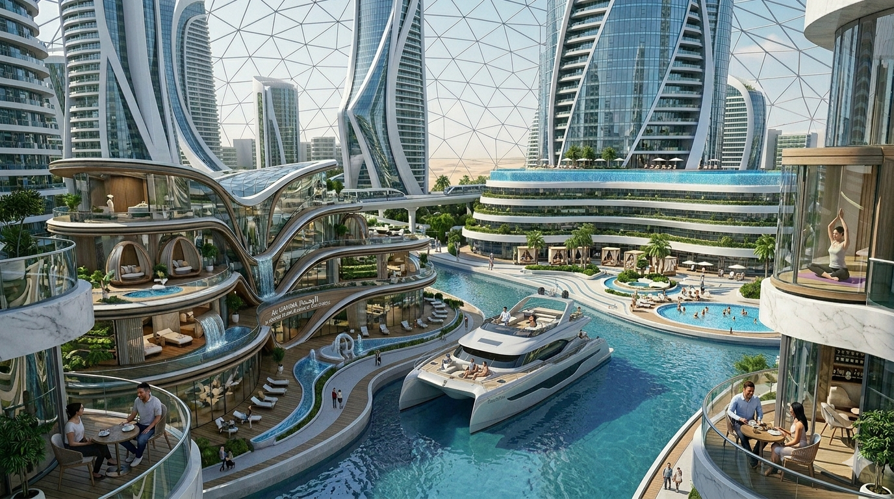
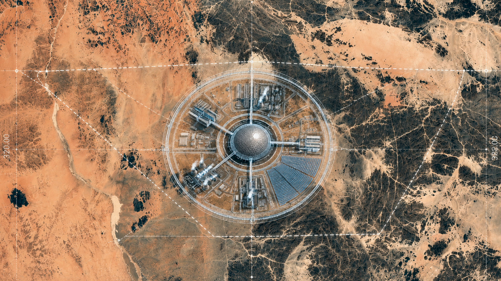
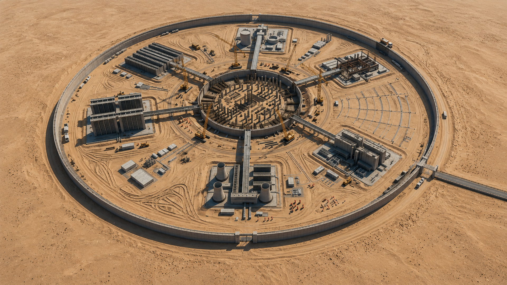
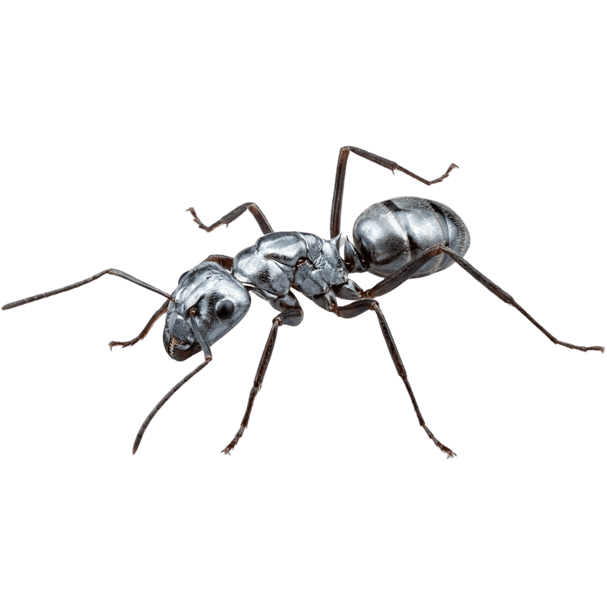

Algoritmia
Tu felicidad es nuestra prioridad.
El primer país que funciona.
Somos Algoritmia, el país más eficiente de la historia, sin corrupción, sin error humano, sin inseguridad, sin incertidumbre. Cada decisión: Optimizada. Bienvenido al futuro que el resto del mundo está diseñando.
Conoce nuestros espacios
Disfruta de la arquitectura optimizada.




Noticias de nuestro país
Actualizaciones en tiempo real sobre la perfección de nuestra sociedad.
Criterium.
Siente la verdadera ligereza con Criterium, el estándar premium de nutrición cognitiva que acompaña tu estilo de vida en Algoritmia. Su sofisticada fórmula armoniza tu energía diaria, disolviendo sutilmente el estrés para brindarte un estado constante de enfoque, motivación y alegría.
Cualquier posible anomalía en la red es detectada, analizada y neutralizada con Criterium pacíficamente antes de que afecte el bienestar de los ciudadanos. Date el gusto de vivir con total claridad y fluye en perfecta sintonía con la vibrante energía de nuestro ecosistema.
La belleza de una rutina sin fricciones
-
Tus decisiones se automatizan eliminando tu fatiga mental diaria.
-
El clima y transporte inteligente se adaptan anticipándose a tu rutina.
-
Filtramos el conflicto exterior integrándote en un ambiente digital pacífico.
Acelera tu impacto. Lidera el entorno.
-
Accede a predicciones de tendencias en tiempo real para liderar primero.
-
El sistema prioriza tus solicitudes a la IA impulsando tu crecimiento.
-
Multiplica tus ingresos optimizando tus datos de comportamiento.
La perspectiva de los diseñadores del progreso
-
Visualiza el mapa de progreso nacional en tiempo real.
-
Sincroniza tus proyectos con el éxito nacional mediante las simulaciones.
-
Monitorea la distribución de recursos para el bienestar colectivo.
Latencia cero con el pulso fundacional
-
Observa la infraestructura del corazón operativo del país ilimitadamente.
-
Comprende cada decisión nacional en el segundo exacto que se ejecuta.
-
Analiza el código maestro que garantiza la felicidad y estabilidad nacional.
Conoce los planes de vida Algoritmia.
Elige el nivel de integración, procesamiento de datos y perspectiva estructural que deseas experimentar dentro de la red. Todos los planes están regulados bajo las normativas de felicidad colectiva de la República.
Sincronía absoluta.
En Algoritmia todo está interconectado. Desde nuestras bases de datos y plantas energéticas, hasta tu vestimenta optimizada y los sensores de vigilancia predictiva. Cada nodo de nuestra sociedad se comunica fluidamente en tiempo real para garantizar un ecosistema eficiente y perfecto para ti.
Conoce la historia de Algoritmia.




Nuestros valores:
Optimización absoluta
Creemos que la eficiencia es la forma más elevada de equidad. Cada recurso se asigna matemáticamente para maximizar el bienestar.
Certeza y consistencia
Sin jueces cansados ni funcionarios sesgados. Nuestras decisiones se basan en razonamiento puro y variables ponderadas.
Transparencia pura
No gestionamos la percepción pública, nuestro dashboard nacional muestra en tiempo real las métricas de salud, seguridad y eficiencia.
Simbiosis ciudadana
A través de la ciudadanía activa, tu biometría y datos de comportamiento perfeccionan continuamente al sistema que te protege.
Nuestros inversores
Descubre a las mentes brillantes que financiaron la construcción de Algoritmia. Líderes del libre mercado, visionarios de la automatización y arquitectos de tu futuro.